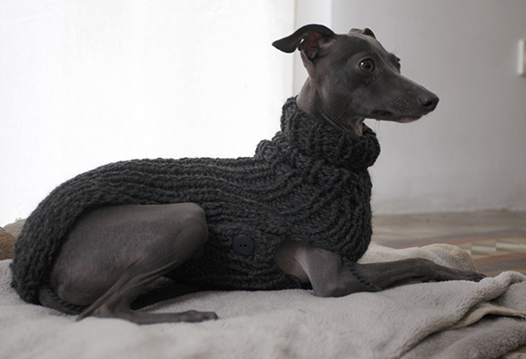

Aquí os enseño mas arte hecho por mi amiga Josefa. Un jersey de lana a medida de Lu para temperaturas del invierno! Le encanta estar tapada. :-)
Here I show you more art of my friend Josefa. A wool sweater tailored for Lu for winter temperatures! She loves being covered. :-)
Hier mehr Kunst von meiner Freundin Josefa. Ein Wollpullover für Lu für winterliche Temperaturen! Sie liebt es zugedeckt zu sein. :-)